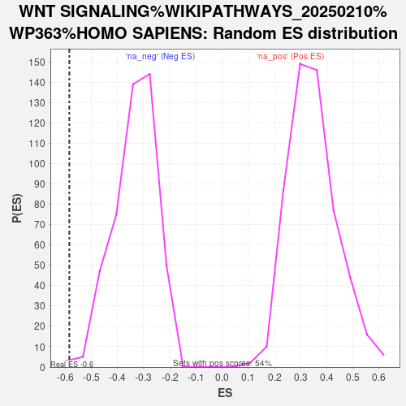

| | | Dataset | GFPPositive_GFPNegative |
| Phenotype | NoPhenotypeAvailable |
| Upregulated in class | na_neg |
| GeneSet | WNT SIGNALING%WIKIPATHWAYS_20250210%WP363%HOMO SAPIENS |
| Enrichment Score (ES) | -0.58357733 |
| Normalized Enrichment Score (NES) | -1.7492862 |
| Nominal p-value | 0.0021598272 |
| FDR q-value | 0.4026036 |
| FWER p-Value | 1.0 |
Table: GSEA Results Summary
 Fig 1: Enrichment plot: WNT SIGNALING%WIKIPATHWAYS_20250210%WP363%HOMO SAPIENS
Fig 1: Enrichment plot: WNT SIGNALING%WIKIPATHWAYS_20250210%WP363%HOMO SAPIENS
Profile of the Running ES Score & Positions of GeneSet Members on the Rank Ordered List
| SYMBOL | RANK IN GENE LIST | RANK METRIC SCORE | RUNNING ES | CORE ENRICHMENT | | 1 | PI4K2A | 2933 | 0.516 | -0.1252 | No |
| 2 | PRKCB | 4299 | 0.307 | -0.1795 | No |
| 3 | NFATC2 | 4806 | 0.254 | -0.1913 | No |
| 4 | DVL1 | 5057 | 0.230 | -0.1910 | No |
| 5 | CTNNB1 | 5554 | 0.188 | -0.2062 | No |
| 6 | CSNK1G1 | 7407 | 0.061 | -0.3009 | No |
| 7 | TCF7L2 | 8595 | -0.003 | -0.3638 | No |
| 8 | PRKCA | 8849 | -0.016 | -0.3763 | No |
| 9 | DVL3 | 9225 | -0.035 | -0.3941 | No |
| 10 | CDK6 | 9919 | -0.073 | -0.4266 | No |
| 11 | CSNK1D | 10002 | -0.077 | -0.4264 | No |
| 12 | TSC1 | 11086 | -0.140 | -0.4756 | No |
| 13 | GSK3A | 11095 | -0.141 | -0.4677 | No |
| 14 | MTOR | 11505 | -0.167 | -0.4795 | No |
| 15 | MAPK1 | 12059 | -0.205 | -0.4967 | No |
| 16 | LRP5 | 12164 | -0.213 | -0.4896 | No |
| 17 | TSC2 | 12181 | -0.214 | -0.4777 | No |
| 18 | ARRB2 | 13175 | -0.293 | -0.5131 | No |
| 19 | GSK3B | 14006 | -0.368 | -0.5353 | No |
| 20 | RYK | 14337 | -0.402 | -0.5290 | No |
| 21 | CSNK1A1 | 14513 | -0.422 | -0.5133 | No |
| 22 | MAP3K7 | 15838 | -0.598 | -0.5481 | Yes |
| 23 | TCF3 | 15899 | -0.609 | -0.5152 | Yes |
| 24 | MAPK8 | 16317 | -0.682 | -0.4969 | Yes |
| 25 | CSNK1E | 16353 | -0.689 | -0.4579 | Yes |
| 26 | TCF4 | 16638 | -0.745 | -0.4288 | Yes |
| 27 | DVL2 | 16666 | -0.752 | -0.3856 | Yes |
| 28 | BCL9 | 16700 | -0.760 | -0.3423 | Yes |
| 29 | CTBP1 | 16778 | -0.777 | -0.3003 | Yes |
| 30 | PPARG | 17218 | -0.883 | -0.2712 | Yes |
| 31 | LRP6 | 17732 | -1.075 | -0.2347 | Yes |
| 32 | CCND1 | 17792 | -1.109 | -0.1720 | Yes |
| 33 | RAC1 | 18018 | -1.238 | -0.1106 | Yes |
| 34 | FRAT1 | 18031 | -1.246 | -0.0373 | Yes |
| 35 | MAPK9 | 18189 | -1.372 | 0.0357 | Yes |
Table: GSEA details [plain text format]

Fig 2: WNT SIGNALING%WIKIPATHWAYS_20250210%WP363%HOMO SAPIENS: Random ES distribution
Gene set null distribution of ES for WNT SIGNALING%WIKIPATHWAYS_20250210%WP363%HOMO SAPIENS